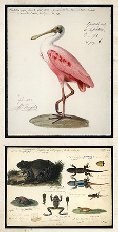

Referencias
- Flores-Villela, O. e I.Goyenechea. 2003. Patrones de distribución de anfibios y reptiles en México. En: Morrone, J.J. y J.Llorente-Bousquets (etds) Una perspectiva latinoamericana de la biogeografía. Las Prensas de Ciencias, Facultad de Ciencias, UNAM y Comisión Nacional para el Uso y Conocimiento de la Biodiversidad. 307 pp.
- Llorente-Bousquets J., et. al. 1996. Biodiversidad, taxonomía y biogeografía de artrópodos de México: Hacia una síntesis de su conocimiento Vol. III. Instituto de Biología, UNAM. 600 pp.
- Magaña-Cota, G.E. 2005. Cuaderno No. 2. de notas de zoología de Alfredo Dugès. XVIII Congreso Nacional de Zoología, Monterrey, Nuevo León. Presentación Oral.
- Magaña-Cota, G.E. 2006. Colección de mamíferos del Museo de Historia Natural “Alfredo Dugès” de la Universidad de Guanajuato. En: Lorenzo, C. et. al. (edts). Colecciones mastozoológicas de México. Instituto de Biología, UNAM y Asociación Mexicana de Mastozoología, A.C. 572 pp.
- Meza-Quijano, F. et. al. 2001. Anfibios y reptiles de la sierra de Santa Rosa, Guanajuato: cien años después. Anales del Instituto de Biología, UNAM, Serie Zoología 72(2): 233-243.
Alfredo Dugès
1826 - 1910
Alfredo Augusto Delsescautz Dugès fue un naturalista considerado el más destacado zoólogo entre los siglos XIX y XX en México y padre de la herpetología en este país. Nació en 1826 en Montpellier, Francia, y murió en Guanajuato, México en 1910. Hijo del médico y naturalista Antoine Louis Dugès.
Recién casado con Marie Louise Frey emigró a México en 1853, médico de profesión, ejerció en varias ciudades del país, como Veracruz, Silao y Guadalajara. No hubo hijos de su matrimonio. Impartió las cátedras de Botánica y Zoología del gabinete de historia natural y el jardín botánico en el Colegio del Estado de Guanajuato, hoy Universidad del Guanajuato. Su hermano Eugenio Dugés, interesado en insectos, también se vino a México y se encargo del Departamento de Historia Natural del Museo Michoacano.
Se interesó en el estudio de la fauna mexicana. Aunque su interés principal eran los reptiles y anfibios, también realizó trabajos sobre mamíferos, insectos y aves, e inclusive hizo trabajos aislados sobre botánica y paleontología. Realizó un gran número de dibujos y acuarelas de las aves de México.
Publicó los libros Programa para un curso de zoología, Elementos de zoología y La flora y fauna del Estado de Guanajuato, así como 168 artículos en publicaciones científicas de la époc. Muchas de sus publicaciones aparecen en la revista La Naturaleza de la Sociedad Mexicana de Historia Natural fundada en 1868 y en la revista de la Sociedad Científica Antonio Alzate. En la primera Sociedad participa junto con Alfonso L. Herrera, Luis M. Villada y con José María Velasco.
Tenía una colección personal de varios grupos de animales, especialmente de anfibios y reptiles, pero también tenía ejemplares de mamíferos que posteriormente pasaron a la colección de Mamíferos del Museo de Historia Natural “Alfredo Dugès” de la Universidad de Guanajuato. La revista científica Dugesiana de la Universidad de Guadalajara se nombró en su honor.
Naturalistas siglo XIX
Aportación

Fragmento del cartel de la exposición "Alfredo Dugès, un científico artista" (IAGO)